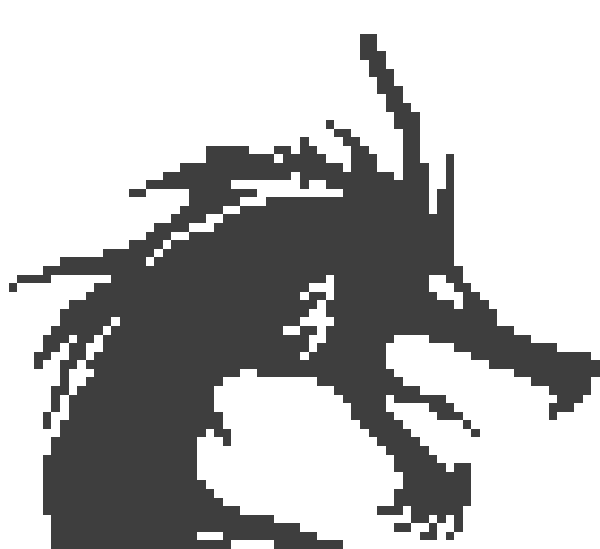
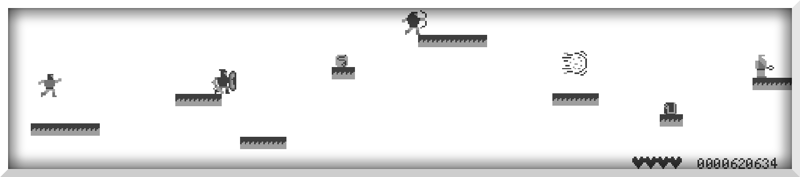

wir animieren mit der abwechselung von jeweils zwei bildern für jeden character die Bilder wechseln alle 6 frames. diesen wert haben wir durch aussproieren gefunden und war für unser gefühl
flüssigste.
das entprellen der tasten haben wir mit zwei variablen gelöst.
einem bool und der gespeichteren zeit des drückens.
sobald man eine taste drückt so wird der bool auf true gesetzt und man keine andere taste mehr drücken.
nach 150 ms werden alle tasten wieder freigeschaltet.
150 ms ist ebenfalls durch asuprobieren entstanden.
wir benutzen für zufallswerte die standart bibliothek von c und seeden den zufallswert mit dem rauschen eines adc kanals.